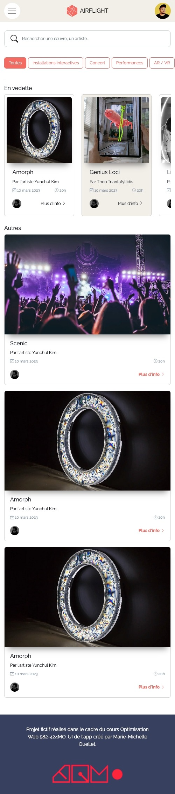

Travail individuel pour la personne qui est fera l'applicaiton mobile APP. Vous devez quand même collaborer avec votre co-équipier pour vous assurer que vos styles s'alignent bien ensemble.
Voici un exemple de ce qui est attendu √† peu pr√®s, comme design üëá
Voici ce que vous devez concevoir l'interface graphique à l'aide de Figma. Suivre les styles Bootstrap notamment pour les cartes et la navbar et personnalisez avez vos styles (typos, couleurs, lignes, ombres, encadrement des cartes, couleurs de textes, d'arrière plana des sections etc.)
Consultez les modèles communs de mise en page et les exemples de composantes Bootstrap. Vous pouvez aussi consulter des thèmes Bootstrap pour vous inspirer et voir à quel point c'est personnalisable.
Un dossier compressé en .zip contenant :
- un export .png de la maquette Figma de la landing page (LP)
- un export .png de la maquette Figma de de l'application mobile (APP)
- le logo du festival (le logo original ou le logo redessiné)
- le favicon du festival en format .png format 32px X 32px
- un guide de styles, créé dans Figma, exporté en .png, qui démontre:
- les 5 couleurs de votre palette, ainsi que leurs codes hexadécimaux ou leurs valeurs RGB
- une démo de votre police de caractère sélectionnée et le nom de cette typographie
Bien nommer votre dossier [vosdeux_nomsdefamille]_P1-1_582-424MO. Le fichier .zip devra aussi porter ce nom.
Remise dans l'onglet Devoirs de l'équipe Teams Optimisation Web avant le cours. Une seule remise par équipe.